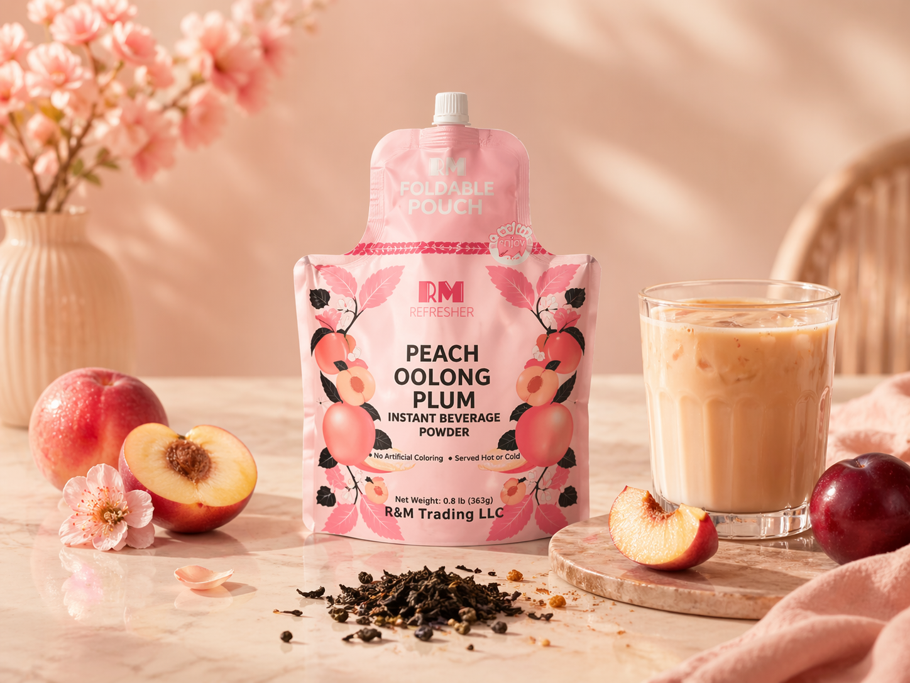
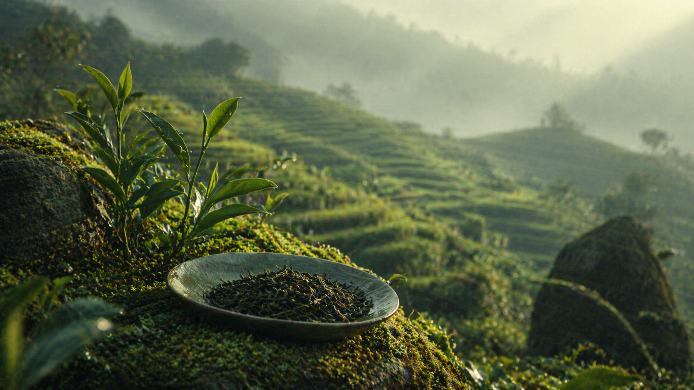
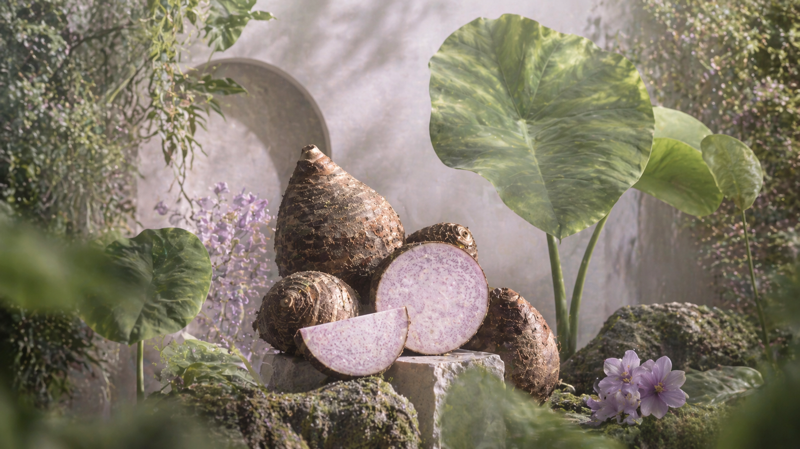
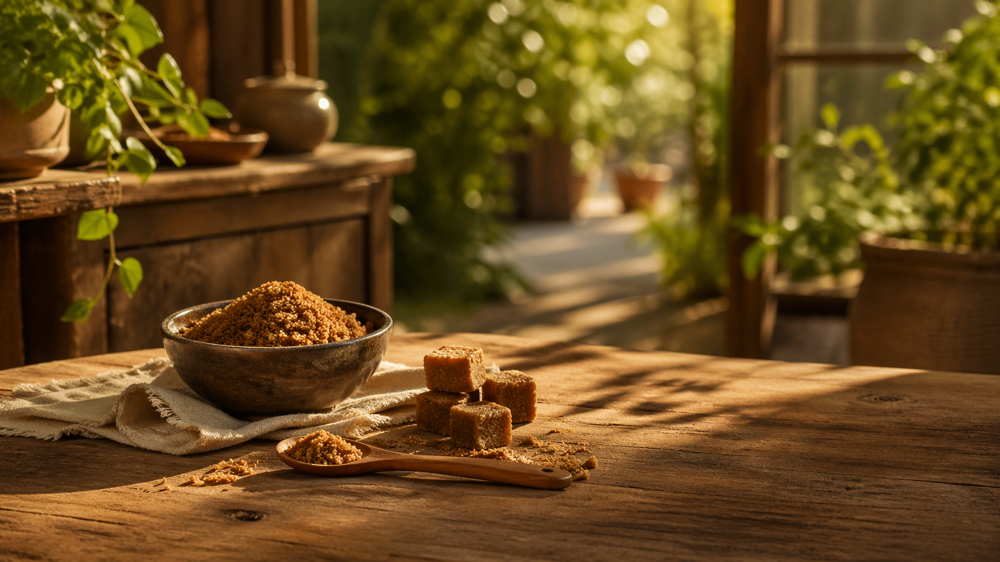

Featured
Peach Oolong Plum
Soft peach aroma, oolong tea notes and a bright plum finish for a refreshing milk tea profile.

Lifestyle
Milk tea for movement, pauses and quiet comfort. 页面保留 R&M 首页的生活化表达，但作为怡泰官网内的一个独立产品集合入口。
Signature Flavors
三款代表风味用于展示 MilkTea Collection 的产品方向，页面内不再跳转到独立 R&M 子站。

Soft peach aroma, oolong tea notes and a bright plum finish for a refreshing milk tea profile.

Smooth, comforting and creamy, built around a mellow taro finish for everyday indulgence.

Rich brown sugar flavor with a warm milk tea profile, suitable for cozy daily drinking moments.

Tea Depth
Taro Softness
Brown Sugar Warmth